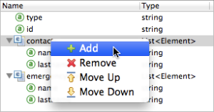
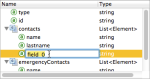
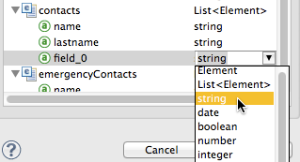

Defining Metadata Using Edit Fields
When defining or updating input and output metadata for the different data types supported by Anypoint DataMapper, you will use one of several very similar editors to create the structure and define fields, elements and attributes. Any of these editors is opened by selecting Edit Structure….
This document describes the use of the editor for key/value maps. The editors for other structured data are substantially similar, and the editors for flat data like CSV files are similar but simplified.
|
DataMapper will continue to be fully supported in all current and future versions of Mule 3.x, however it will be removed in Mule 4.0 in favor of the Transform Message component (based on DataWeave code). We recommend that if you wish to take advantage of the new capabilities of DataWeave or if you start new projects, upgrade now. A migration tool is now included in Studio, which assists in converting a DataMapper map to DataWeave. Right click on a DataMapper, select Migrate to DataWeave, and follow the instructions. 
If you don’t see DataMapper on your palette, you can enable it by going to Preferences > Anypoint Studio > Palette Profiles and ticking the checkbox Show deprecated Mule Components and Attributes. |
|
This document assumes the reader is familiar with the DataMapper Transformer. Consult the DataMapper User Guide and Reference document for details. |
About the Examples
The illustrations used in this document are taken from the discussion "Shortcut: Creating Output Metadata based on Defined Input Metadata" in Defining DataMapper Input and Output Metadata. If you want to reproduce the tasks described here, follow the steps in the example in that discussion to set up your environment.
|
You can edit data structure definitions (that is, fields) in an existing DataMapper transformer within the Input and Output panes of its DataMapper View. Consult Updating Metadata in an Existing Mapping for details. |
Adding a Field
-
Click
contactsto select the parent element for the new field. (This step does not apply when working with flat data like CSV or fixed width files.) -
Click the icon in the upper-left corner of the editor panel to create a new field under the selected parent. Alternatively, right-click the existing parent and select Add.
A new field is inserted.
-
Click the field label to edit the name of the field, then press Enter.

Renaming a Field
-
To rename a field, click the field name.
-
Type in the new field name, then press enter.
Modifying a Field’s Type
To change the type of a field:
-
Click the field’s type in the Type column.
-
Use the drop-down menu to select a new field type.
 -
Click outside the type menu to deselect the type value.
Deleting a Field
Use one of the following three methods to delete a field.
-
Right-click the field name, then select Remove from the drop-down menu.
-
Click to select the field, then press the red "X" icon in the upper-left corner of the editor panel.
-
Click to select the field, then press Delete (not Backspace). (On a Mac keyboard, press fn+delete.)